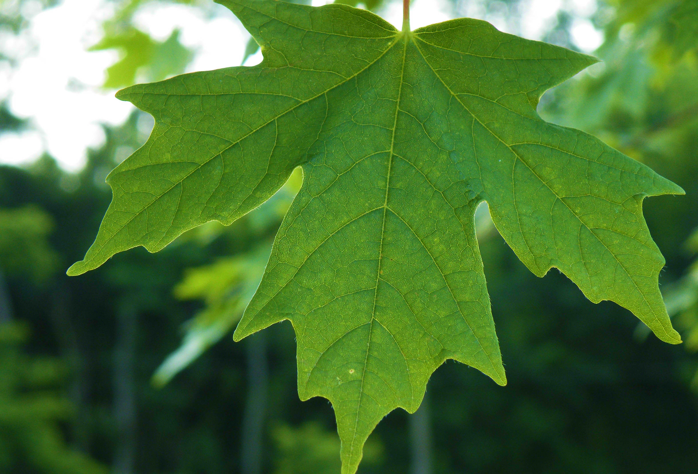

<ion-view view-title="Selection">
  <ion-nav-bar class="bar-balanced">
    <ion-nav-buttons side="left">
        <a class="button button-clear" href="#/dash">
          <i class="big-icon ion-chevron-left"></i>
        </a>
    </ion-nav-buttons>
  </ion-nav-bar>

  <ion-content>
    <center>
      <div class="">
        <center>
          
        </center>
      </div>
    </center>
    <br>
    <center><h4>What would you like to do?</h4></center>
    <div class="row">
      <button ng-click="goToState('identify')" class="button button-block button-balanced btn-radius"><small><b>IDENTIFY A LEAF</b></small></button>
    </div>
    <div class="row">
      <button ng-click="goToState('issue')" class="button button-block button-assertive btn-radius"><small><b>REPORT AN ISSUE</b></small></button>
    </div>
    </div>
  </ion-content>

</ion-view>
